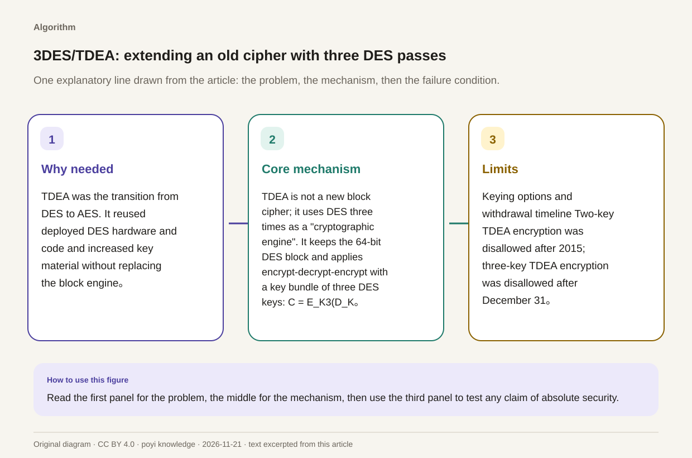
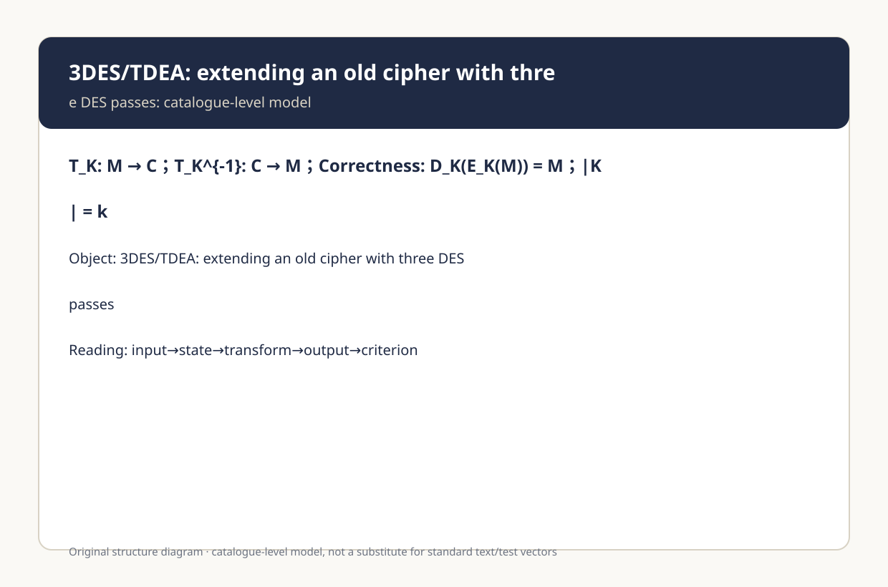

Principles
Algorithm: Triple DES (3DES 三重数据加密). TDEA is not a new block cipher; it uses DES three times as a "cryptographic engine". It keeps the 64-bit DES block and applies encrypt-decrypt-encrypt with a key bundle of three DES keys:
C = E_K3(D_K2(E_K1(P)))
Encryption first encrypts with K1, decrypts with K2, and encrypts with K3. Decryption uses the same keys in reverse order:
P = D_K1(E_K2(D_K3(C)))
The middle decryption step is not a mistake: the EDE structure makes the three-key option collapse to single DES when K1=K2=K3, which helps compatibility with legacy systems. TDEA keeps a 64-bit block and performs 3×16=48 DES rounds internally; it expands key material, not the block. TDEA has three historical keying options: 1-key (K1=K2=K3), 2-key (K1=K3) and 3-key (three independent keys). These names describe the number of independent keys in the bundle; FIPS 46-3 numbers its Keying Options differently (Option 1 is three independent keys, Option 3 is three identical keys). Counting parity bits, their nominal lengths are 64, 128 and 192 bits; the effective bits used by the algorithm are 56, 112 and 168. Current SP 800-67 Revision 2 permits only 3-key for encryption, prohibits 2-key for cryptographic protection, and treats 1-key as a historical option equivalent to single DES. Nominal bits are not security strength: NIST assigns about 80 bits of security to 2-key TDEA and about 112 bits to 3-key TDEA.

Why it matters
TDEA was the transition from DES to AES. It reused deployed DES hardware and code and increased key material without replacing the block engine, so 1990s systems could extend their service life quickly. FIPS 46-3 recognized TDEA as a federal algorithm in 1999 while demoting single DES to legacy systems only.
It is also a warning about nominal key length. A 3-key TDEA bundle has 192 nominal key bits and 168 effective bits, but public security assessment gives it about 112 bits; 2-key TDEA is nominally 128 bits with 112 effective bits but about 80 bits in strength. Treating 192 or 168 as the security level overstates the margin. TDEA's 64-bit block also creates birthday collisions, making high-volume protocols weaker than the key length suggests.
TDEA's historical role was not long-term adequacy but adequacy during a migration window. Once AES was available and migration was affordable, staying on TDEA became a compatibility choice rather than a security choice.
Applications
Typical TDEA deployments were legacy systems in federal agencies and older network protocols. It appeared where DES hardware had to be reused: government terminals, old devices and early TLS/VPN configurations. FIPS 46-3 explicitly restricted single DES to legacy systems and treated TDEA as the federal symmetric encryption choice of that time; that reflects the 1999 transition policy, not today's approval status.
TDEA is normally used with a mode of operation. ECB encrypts each 64-bit block independently; CBC needs an initialization vector and hides repetition; CFB/OFB turn the block cipher into a stream-like generator. A mode does not change the 64-bit block or the 48-round engine, and cannot repair key options or data-volume limits. Concrete modes belong to the modes entity and are not detailed here.
In modern protocols TDEA mainly survives as a compatibility option. As long as a protocol still allows it, long connections and high data volumes expose the 64-bit birthday bound; the ability to still decrypt old data and the duty to encrypt new data are different questions.

Limits & attacks
Two-key TDEA encryption was disallowed after 2015; three-key TDEA encryption was disallowed after December 31, 2023. NIST announced the withdrawal of SP 800-67 Revision 2 in 2023 and formally withdrew it on January 1, 2024. After withdrawal, TDEA is allowed only for decryption, key unwrapping and MAC verification of already-protected data, not for new encryption protection.
These dates are policy status, not a physical moment when the algorithm suddenly stopped working. They mean new systems should not choose TDEA, while old systems need risk-based migration and continued ability to decrypt legacy data.
NIST SP 800-57 assigns about 80 bits of security strength to 2-key TDEA and about 112 bits to 3-key TDEA. A 3-key bundle has 192 nominal key bits and 168 effective bits but only 112 bits of assessed strength; this is an assessment result, not an implementation defect. Both 80 and 112 bits are below a modern 128-bit target and cannot protect long-term new data.
TDEA still has a 64-bit block. SP 800-67 Revision 2 limits encryption under a single 3-key bundle to 2²⁰ 64-bit blocks (8 MiB) and explicitly prohibits using 2-key TDEA for cryptographic protection. That standard limit is much stricter than the birthday bound. The birthday bound itself makes collisions non-negligible after about 2³² blocks (about 32 GiB); Sweet32-style attacks use repeated ciphertext blocks in long connections to recover parts of plaintext. TDEA's 168 effective key bits and 112-bit security strength cannot compensate for a 64-bit block: the birthday bound is set by block size, not key size.
TDEA security depends on the quality of all three DES keys. SP 800-67 requires avoiding DES weak and semi-weak keys and explicitly prohibits three identical keys. If all three keys are the same DES weak key, TDEA degenerates to single DES under that weak key: encrypting twice with the same weak key returns the plaintext (E_K(E_K(P))=P); using three identical keys and calling it 3DES is only an expensive wrapper around single DES.
The 1-key option (K1=K2=K3) is mathematically single DES. It appears as a historical keying option in the FIPS 46-3/ANSI X9.52 context, but SP 800-67 §3.1 prohibits three identical keys, so it is not a valid TDEA key bundle either. Any deployment that treats 1-key TDEA as three-key TDEA gets only the single-DES effective key bits (56).
The teaching implementation verifies only the EDE structure and known answers; it does not handle padding, modes, key management, side channels or protocol integration. Real systems also need key-bundle generation, weak-key checks, initialization vectors, data-volume limits and migration policy; these failure modes are outside the algorithm formula.
History
TDEA standardization is connected to ANSI X9.52. FIPS 46-3 recognized TDEA as a federal algorithm in 1999 and stated that single DES was permitted only for legacy systems. NIST SP 800-67 then gave detailed TDEA recommendations; the final Revision 2 was published in 2017 and withdrawn on January 1, 2024.
The transition schedule tightened step by step: two-key TDEA encryption was disallowed after 2015; three-key TDEA encryption after the end of 2023; NIST announced the withdrawal of SP 800-67 Revision 2 in 2023 and formally withdrew it in 2024. AES became the replacement, but the large installed base kept TDEA alive for two decades.
This history shows that algorithm standardization is not a single event: recognition, deprecation, prohibition of new uses, withdrawal and legacy decryption support are different stages. Reading a past federal standard as present approval for new use gives the opposite conclusion.
Worked example & verification
Worked example
Take one published or standard test vector, record the input, the ordered steps and the byte-exact output, then compare with an independent implementation. Where no citable numeric vector is available, the entry records only structural steps and does not invent an output.
References
- Wikipedia search entry for 3DES 三重数据加密. https://zh.wikipedia.org/w/index.php?search=3DES%20%E4%B8%89%E9%87%8D%E6%95%B0%E6%8D%AE%E5%8A%A0%E5%AF%86
- Handbook of Applied Cryptography (Menezes, van Oorschot, Vanstone). https://www.cacr.math.uwaterloo.ca/hac/